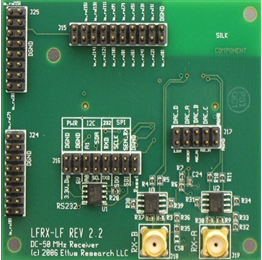
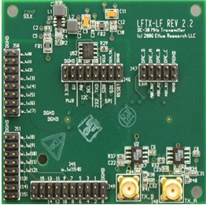
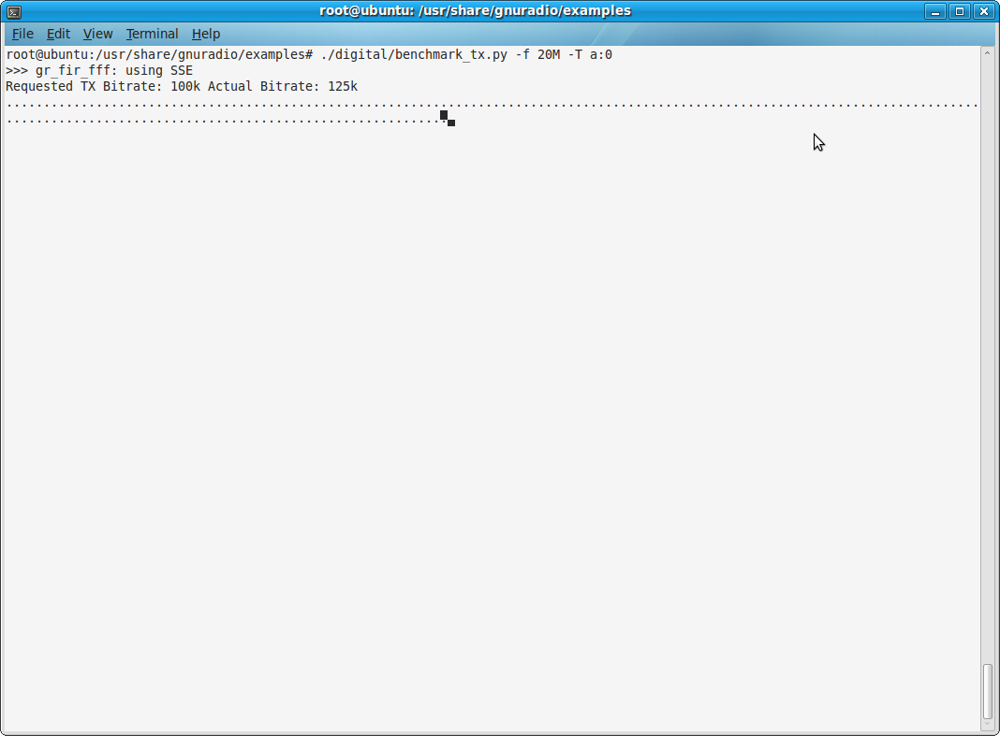
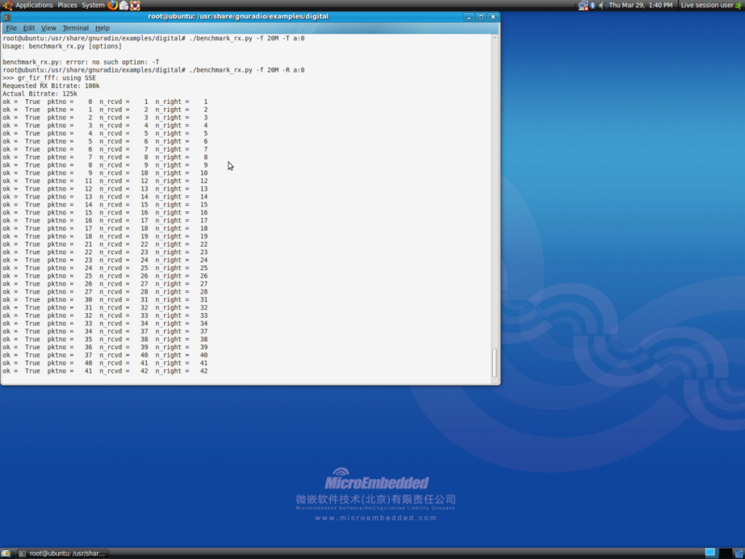

LFTX-LFRX数据传输
硬件要求：
1.甲乙两台装有openBTS live版本的Ubuntu系统的电脑。
2.两个USRP1主板。
3.一个LFTX-LF（DC-30MHz）子板和一个LFRX-LF（DC-30MHz）子板。
4.一根SMA-SMA的USRP馈线。
软件环境：
USRP1镜像系统（64MHz或52MHz）。
DEMO调试
1.介绍一下子板
LFRX

LFRX子板采用两个高速运算放大器，工作频率为0-30MHz。产品通常被应用于将外部的射频前端信号通过下变频到其工作频段范围内。在使用适当的组件情况下，LFRX也可以将USRP工作在HF频段。通过数据转换后，LFRX接收到的每个信号既可以独立操作，又作为一个完整的I/Q信号。典型应用包括HF通信、配合外置的射频前端和直接接收30MHz以下的信号测量。如上图为LFRX子板图。
LFTX

LFTX子板采用两个高速运算放大器，工作频率为0-30MHz。产品通常应用在HF波段的，或采用一个外部的射频前端来实现上变频后者信号放大。LFTX可以提供独立的输出，后输出完整的I/Q信号。典型应用包括HF通信、配合外置的射频前端和直接产生30MHz以下的信号。如上图为LFTX子板图。
DEMO测试步骤
1、获取root权限(因为都要直接对硬件操作)
终端输入命令：
sudo su
2、甲PC机连接的母板上使用接收A接口并检测主机与板子USB口的连接
终端输入命令：
lsusb | grep fffe:0002
若出现...Device 004:ID fffe:0002这样的字样，表示正常连接。
3、乙PC机连接的母板上使用发送A接口并检测主机与板子USB口的连接
终端输入命令：
lsusb | grep fffe:0002
若出现...Device 004:ID fffe:0002这样的字样，表示正常连接
4、乙PC机向甲主机发送20M Hz的正弦波。
终端输入命令：
cd /usr/share/gnuradio/examples/digital/
./benchmark_tx.py -f 20M -T A:0
出现下图则发送正常

5、甲PC机准备接收数据
终端输入命令：
cd /usr/share/gnuradio/examples/digital/
./benchmark_rx.py -f 20M -T A:0
出现下图则接收正常
